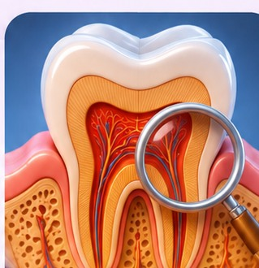
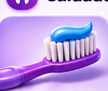
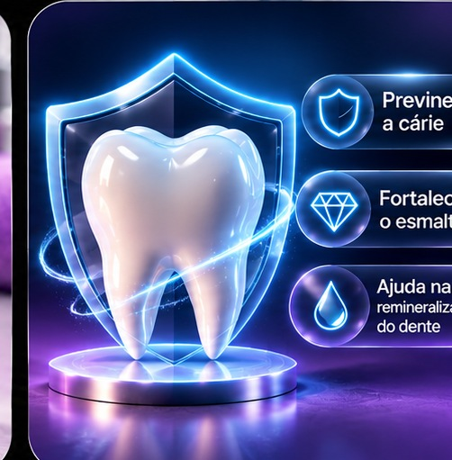
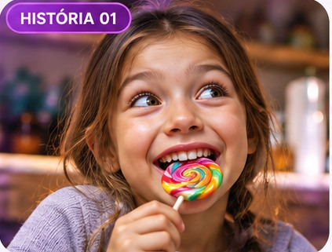

🦷 O dente por dentro
Toque em cada parte para descobrir sua função.

Dentinhos 3D, histórias, narração e jogos
Entrar →🔬 Área EducativaAnatomia, doenças, prevenção e tratamentos
Entrar →Aprenda, jogue e descubra como cuidar do seu sorriso de um jeito leve, divertido e interativo.
Começar agora →Com Lila, Bento, Nina e Leo, aprender fica muito mais divertido.
Conhecer personagens →Toque em cada parte para descobrir sua função.

Escovação, fio dental e cuidados com a língua.

Aprenda a escolher e usar a quantidade certa.

Para prevenir a cárie, recomenda-se creme dental com pelo menos 1.000 ppm de flúor. 1.100 ppm é uma concentração comum e adequada.
Até 3 anos: grão de arroz cru. De 3 a 6 anos: ervilha. Crianças precisam de supervisão para não engolir a pasta.
Entenda os sinais e saiba quando procurar ajuda.
Fixas, parciais, totais e sobre implantes: indicações e cuidados.

Prótese não é apenas estética: ela pode ajudar a recuperar mastigação, fala e conforto. A escolha depende de avaliação individual.
Ver tipos e cuidados →Jogue o dado em formato de dente, avance no tabuleiro e aprenda com perguntas e desafios!

✓ 1 ou 2 jogadores
✓ Perguntas educativas
✓ Efeitos e narração opcionais
Os ácidos produzidos pelas bactérias do biofilme podem desmineralizar o esmalte. Sem cuidados, a lesão pode atingir a dentina e a polpa.
Explorar a experiência →Lila, Bento, Nina e Leo enfrentam situações reais. Escolha o que fazer e descubra por que cada atitude importa.

Explorar histórias →Todo conteúdo explica o que é, por que acontece, quais sinais observar, como prevenir e quando procurar o dentista. As orientações são educativas e não substituem uma avaliação profissional.